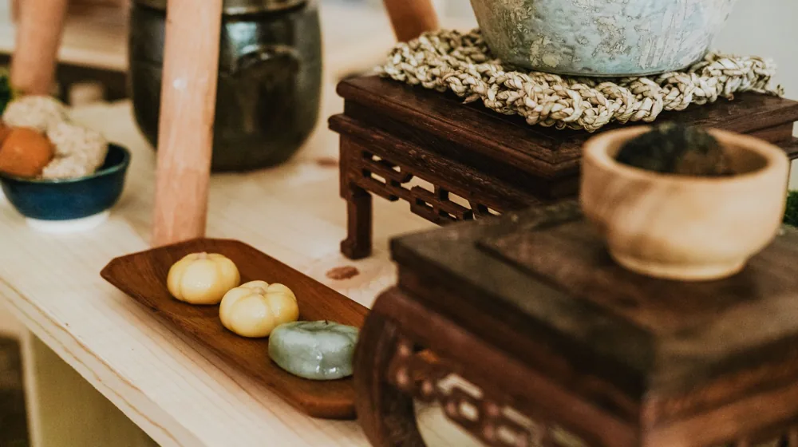

종가 다과상, 무엇을 담을까? 품격 있는 선택을 위한 완벽 비교 가이드
사진: RDNE Stock project / Pexels (무료 이미지, 출처 표기)
종가 다과상, 단순한 음식을 넘어선 문화적 가치

품격 있는 자리, 또는 소중한 손님을 위한 종가 다과상을 준비하고 싶으신가요? 우리 전통의 멋과 맛이 담긴 다과상은 그 자체로 아름다운 문화 경험을 선사합니다. 하지만 수많은 종가 다과상 중에서 어떤 것을 선택해야 할지 고민될 때가 많습니다. 이 글에서는 전통 종가 다과상의 의미부터 주요 구성, 그리고 상황과 취향에 맞는 다과상을 선택하는 실질적인 팁을 알려드립니다.
종가(宗家)는 한 가문의 정통을 잇는 큰집을 의미하며, 그 안에서 차려지는 다과상(茶菓床)은 단순한 간식을 넘어 손님을 정성껏 대접하는 마음과 가문의 품격을 나타내는 중요한 상차림입니다. 조상 대대로 내려오는 음식 솜씨와 집안의 전통이 고스란히 담겨 있어, 다과상 하나에도 깊은 역사와 문화가 살아 숨 쉽니다.
종가 다과상 유형별 특징 비교: 지역색과 구성의 차이
우리나라의 종가 다과상은 지역별 특색과 가문의 전통에 따라 다양한 형태로 발전해왔습니다. 크게 북부/중부형, 남부/영남형, 호남형, 그리고 현대 재해석형으로 나누어 볼 수 있습니다. 각 유형은 주된 다과 구성과 분위기에서 확연한 차이를 보이며, 이를 이해하면 자신의 목적에 맞는 다과상을 선택하는 데 큰 도움이 됩니다.
품격 있는 다과상 구성을 위한 필수 요소
다과상은 크게 한과류, 떡류, 차, 그리고 과일 및 기타 음료로 구성됩니다. 각 요소가 조화롭게 어우러져 시각적으로도 아름답고 맛의 균형을 이룹니다.
- 한과류: 약과, 유과, 강정, 다식 등 곡물과 꿀, 기름으로 만든 전통 과자입니다. 달콤하고 고소한 맛으로 차와 잘 어울립니다. 약과는 부드러운 식감, 유과는 바삭한 식감이 특징입니다.
- 떡류: 절편, 인절미, 증편, 약식 등 쌀이나 찹쌀을 주재료로 만든 다양한 떡입니다. 쫀득하고 담백한 맛으로 든든함을 더해주며, 계절에 따라 다양한 재료를 활용합니다.
- 차(茶): 다과상의 핵심으로, 녹차, 발효차, 꽃차, 허브차 등 다과와 어울리는 다양한 차를 준비합니다. 차의 향과 맛이 다과의 풍미를 더욱 돋웁니다.
- 과일 및 기타: 제철 과일, 정과(설탕에 졸인 과일), 식혜, 수정과 등 시원하고 상큼한 맛으로 입안을 개운하게 해주는 요소입니다. 다과상의 색감과 신선함을 더합니다.
나에게 맞는 종가 다과상 선택 가이드
다과상을 고를 때는 단순히 예쁜 것을 넘어, 어떤 자리와 목적에 맞는지 고려하는 것이 중요합니다.
첫째, 상황과 목적을 명확히 합니다. 어르신을 위한 자리라면 소박하고 정갈한 남부/영남형이 좋고, 격식을 갖춘 접대나 중요한 선물이라면 화려하고 정교한 북부/중부형이 적합할 수 있습니다. 젊은 감각의 모임이라면 현대 재해석형 다과상이 좋은 인상을 남길 것입니다.
둘째, 예산을 고려합니다. 수제 다과는 재료와 정성에 따라 가격대가 다양하므로, 합리적인 예산 안에서 최적의 선택을 하는 것이 현명합니다. 마지막으로, 받는 사람의 취향을 고려합니다. 평소 단맛을 좋아하는지, 담백한 맛을 선호하는지, 특정 재료에 대한 선호도가 있는지 등을 파악하면 더욱 만족스러운 다과상을 선물할 수 있습니다.
종가 다과상 준비 및 구매 시 유의할 점
종가 다과상은 정성이 중요한 만큼, 준비와 구매 과정에서도 몇 가지 유의할 점이 있습니다.
무엇보다 신선도와 위생이 중요합니다. 믿을 수 있는 전통 음식 전문점이나 종가 음식 전승 업체 등을 통해 구매하는 것이 좋습니다. 재료의 원산지나 제조 과정을 투명하게 공개하는 곳을 선택하면 더욱 안심할 수 있습니다.
보관 및 섭취 방법을 미리 확인하세요. 다과는 종류별로 보관 기간과 최적의 섭취 방법이 다릅니다. 예를 들어, 떡류는 냉장 보관 시 굳을 수 있으니 실온 보관하거나 빨리 섭취하는 것이 좋습니다. 2026년 10월 기준, 많은 업체에서 온라인 주문 및 배송 서비스를 제공하고 있으나, 상세한 구성과 가격, 배송 가능 여부는 각 업체의 공식 홈페이지에서 다시 확인하는 것이 좋습니다. 특히 수제 다과는 재료 수급 및 제작 기간이 필요할 수 있으므로, 최소 1주일 전 미리 예약하는 것을 권장합니다.
🔗 이 글도 함께 보면 좋아요: 종가 프라이빗 다이닝, 어떻게 예약하고 준비할까? 놓치면 후회할 팁
관련 추천 상품
종가 다과상, 전통 다과, 한과 세트 관련 인기 상품 보러가기
이 포스팅은 쿠팡 파트너스 활동의 일환으로, 이에 따른 일정액의 수수료를 제공받습니다.
한눈에 보는 상품 목록
전통 한과 명품 세트
다양한 종류의 수제 약과, 유과, 강정 등으로 구성된 고급 한과 선물 세트.
궁중 떡과 다과 세트
궁중 떡과 다식, 정과 등 품격 있는 전통 다과로 이루어진 상차림 세트.
제철 과일 곁들인 다과상
신선한 제철 과일과 소박한 전통 다과가 조화를 이룬 건강한 다과상.
현대적 감각의 퓨전 다과상
전통 다과를 현대적인 디자인과 맛으로 재해석한 특별한 다과상.